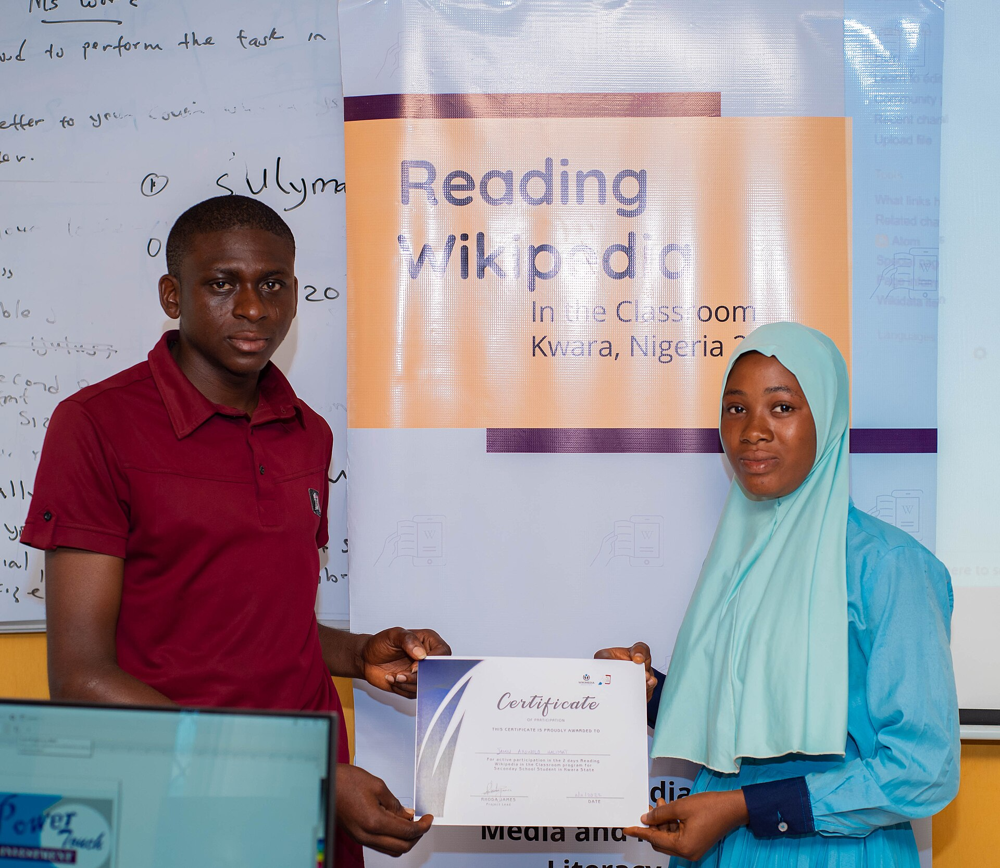

DICAS DE ESTUDO
Leitura e interpretação de textos
Desenvolva o hábito de ler, localizar ideias principais e construir sentidos com atenção ao texto.
Introdução
Ler com compreensão é um processo ativo: o leitor relaciona informações, faz perguntas, percebe pistas e revê interpretações. Velocidade não é o único objetivo. Um ritmo que permite pensar sobre o texto pode ser mais útil, especialmente quando o assunto é novo ou complexo.
1. Desenvolva um hábito possível
Escolha um texto que desperte curiosidade e um momento confortável. Comece com poucos minutos ou algumas páginas; a regularidade pode crescer aos poucos. Alterne formatos — livro, notícia, conto, texto escolar — de acordo com o objetivo. Se um título não combina com você, converse com um professor ou bibliotecário sobre outras opções adequadas.
Antes de ler, observe o título, a organização e o tema. Pergunte o que já sabe e o que espera encontrar. Essa preparação cria um propósito e ajuda a perceber as ideias centrais.

2. Interprete o texto por partes
Durante a leitura, identifique quem fala, qual assunto está em discussão e o que o texto afirma. Observe conectivos como “porém”, “porque” e “portanto”: eles indicam contraste, causa ou conclusão. Diferencie uma informação explícita de uma inferência, isto é, uma conclusão apoiada em pistas do texto e no contexto.
Quando um parágrafo ficar confuso, releia-o mais devagar e procure o referente de pronomes, palavras desconhecidas e relação com o parágrafo anterior. Ao final de cada trecho, tente dizer em uma frase o que ele acrescenta ao assunto.

3. Faça anotações úteis e amplie o vocabulário
Marque apenas trechos importantes e anote perguntas ou palavras-chave nas margens ou em um caderno. Evite destacar quase tudo: isso dificulta encontrar o essencial. Para uma palavra desconhecida, use o contexto para levantar uma hipótese, depois confira o significado em uma fonte confiável e releia a frase para ver se faz sentido.
Um registro simples pode incluir: ideia principal, evidência usada pelo autor, dúvida e uma relação com outro conteúdo. Essas notas ajudam a revisar sem substituir a leitura completa.
4. Leia textos literários e resuma capítulos
Em literatura, observe narrador, personagens, espaço, tempo, conflitos e mudanças ao longo da narrativa. Pergunte como as escolhas de linguagem produzem efeitos e quais pistas sustentam sua interpretação. Nem todo texto oferece uma única leitura, mas uma interpretação precisa dialogar com elementos da obra.
Para resumir um capítulo, registre a situação inicial, os acontecimentos decisivos e o que mudou. Use suas palavras e selecione apenas o que é necessário para entender a sequência; evite copiar parágrafos inteiros ou incluir opiniões como se fossem fatos do enredo.

5. Mantenha a atenção durante a leitura
Escolha uma meta curta, como ler uma seção e anotar a ideia principal. Reduza notificações e faça pausas quando perceber que está repetindo linhas sem compreender. Se a mente se dispersar, volte ao último ponto que lembra e retome com uma pergunta orientadora. Um lugar silencioso ajuda quando disponível, mas não é requisito para toda leitura.
Erros comuns
- Ler rapidamente sem verificar se entendeu.
- Destacar tudo ou copiar o texto em vez de selecionar ideias.
- Consultar cada palavra imediatamente sem tentar usar o contexto.
- Tratar uma inferência como informação explícita sem apontar as pistas.
- Desistir porque a atenção oscilou; faça uma pausa e recomece por um trecho curto.
Resumo
Crie um hábito possível, faça perguntas, relacione partes do texto e anote ideias com suas palavras. Para resumir, preserve a sequência e os pontos principais; para interpretar, sustente suas conclusões em pistas do texto.
Conclusão
Escolha um texto curto e, ao terminar, explique em voz alta a ideia central e uma pergunta que ficou. A leitura melhora com prática e curiosidade, sem precisar virar uma corrida. Cada texto oferece uma nova oportunidade de observar, interpretar e imaginar.